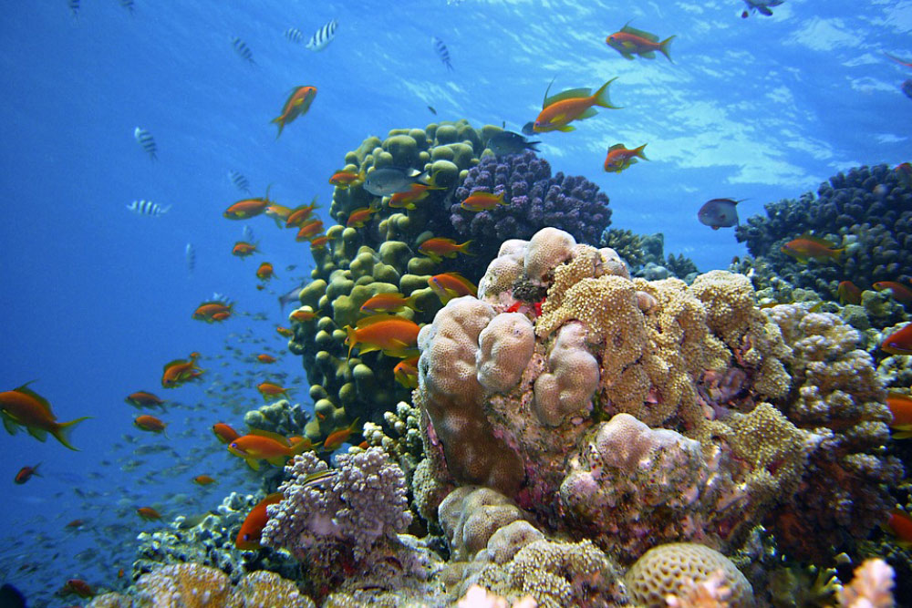
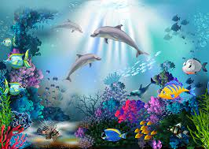

Добро пожаловать в подводный мир
Океан - богатый подводный мир, с его законами, сокровищами и обитателями. Он до сих пор остаётся загадкой для человечества. Погружаясь в морские глубины, мы открываем невероятную красоту и тайну океана. Подводный мир прекрасен, под водой, скрытая от глаз человека, бурлит таинственная и удивительная жизнь. Широким спросом среди людей – любителей острых ощущений, пользуется дайвинг или подводное плаванье с аквалангами. Сегодня каждый, здоровый человек, может заниматься подводным плаваньем, и чувствовать себя исследователем морских глубин или искателем приключений. Если человек владеет элементарными знаниями, умениями, то сможет плавать с аквалангом относительно безопасно и просто, но при этом нужно иметь ещё снаряжение
Сегодня мы увидим различных рыб наприме как рыбы-хирурги и т.д
(Переходим на Рыбы 1)
">  